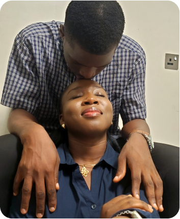

<div class="lovestory__section">
  <div class="lovestory__body">
    <div class="back__btn" (click)="onHome()">
      
      <p>Back to Home</p>
    </div>
    <div class="lovestory__container">
      <!-- <h2>Groom-love Testament</h2> -->
      <div class="chapter__body">
        <div class="first__chapter">
          
          <div class="continuation__body">
            <!-- <p class="title">Continuation...</p> -->
            <p class="continuation">
              <b>A Memorable Birthday</b>
              <br />
              On May 7th, 2022, I made a journey down to her school to wish her
              a happy birthday and to make her day as special as she had made
              mine. She was excited and surprised that I had taken the risk to
              travel for her birthday. We had our first stroll together as she
              took me around the campus. Monjolajesu is a cheerful and vibrant
              person, always full of excitement. Spending time with her was
              healing for me, and her big heart made a significant impact.
              Initially, I wanted to be just a good friend and brother, but as
              careful as I was, one moment kept leading to another, deepening
              our bond.
              <br> 
              <br> 
              <b>The Proposal</b>
              <br />
              May 7th, 2023, marked another milestone, another birthday and another
              memorable date. We ordered our meal and enjoyed a lively conversation.
              Then, suddenly, I shared my conviction with her. The reaction on her
              face was priceless; she was genuinely surprised. I told her to take
              her time to process and think about it. I didn't pop the ring at that
              moment—sorry guys, smiles. 
              <br />
              <!-- <span>First Date</span> -->
            </p>
          </div>
        </div>
        <!-- second chapter -->
        <div class="second__chapter">
            The following days were quiet
            between us. Everything seemed to freeze, and she wasn’t as responsive
            as before. Then, on May 19th, my phone beeped with a message from her
            saying "YES." I replied, asking for a face-to-face confirmation. On
            the following Sunday, after service on May 22nd, I received the good
            news in person. Since then, there has been no regret—only a deep sense
            of fulfillment.
            <br />
          <br />
          <b>Overcoming Challenges</b>
          <br />
          Our journey hasn't been without its frictions and challenges. Aligning
          our shared dreams, purposes, and even behavior patterns required
          effort. But these challenges helped us grow stronger and better. We
          are where we are today not by our own power, but by the faithfulness
          of the Lord. Monjolajesu made many sacrifices that amazed me and gave
          me the assurance I needed.
          <br> 
          <br>
          <b>Special Thanks</b>
        <br>We extend our heartfelt
          gratitude to everyone who has supported our relationship in one form
          or another. We appreciate the families, friends, and mentors who have
          been significant during our journey. To each other, we say: "I love
          you more every day, and I am excited for our future together. Here's
          to a lifetime of love, laughter, and adventure." This is our love
          story, a testament to faith, friendship, and the enduring power of
          love. Cheers
          <br>
          
        </div>
        <!-- third chapter -->
        <div class="third__chapter">
            <b>Samuel Ayokanmi Victor</b>
        </div>
     
      </div>
    </div>
  </div>
</div>
